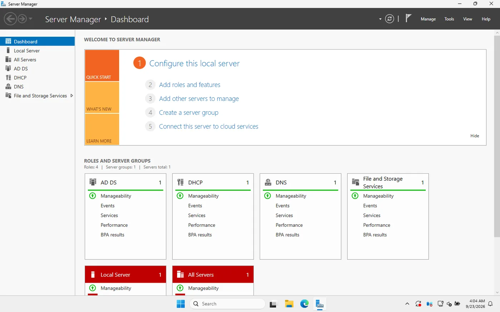
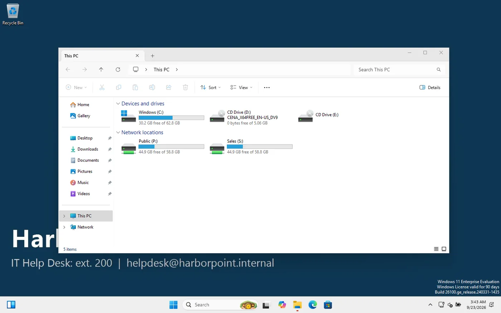
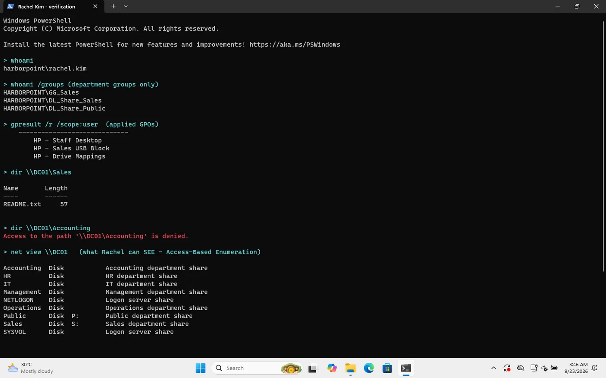
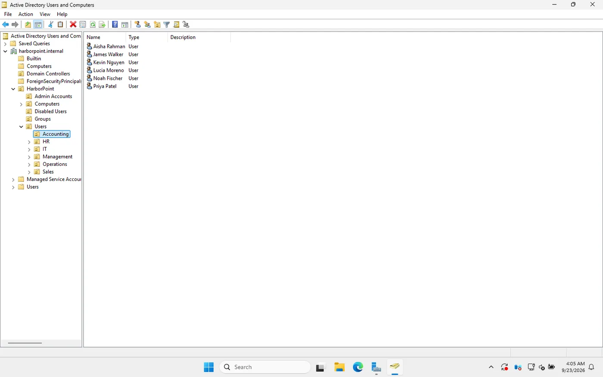
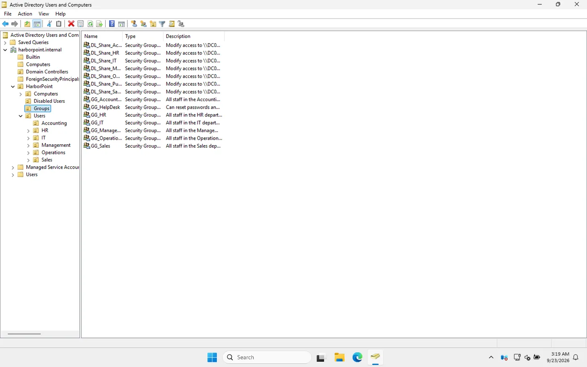
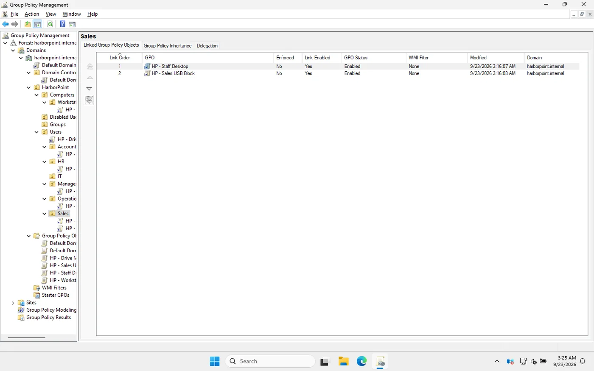
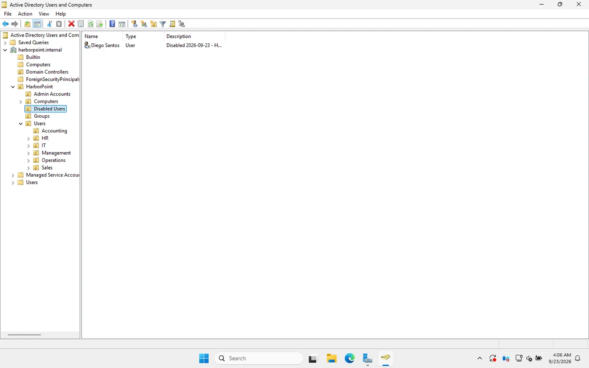

← All projects
Windows Active Directory homelab
The IT setup for Harbor Point Accounting, a fictional 20-person firm, on Windows Server 2025, followed by the day-to-day tickets a help desk or junior sysadmin would handle there.
- Type
- Personal learning lab
- Platform
- VirtualBox, one server and one PC
- Stack
- Windows Server 2025, Windows 11, PowerShell
- Result
- 6 tickets worked, 9 problems logged and fixed

What I built
- Domain. A new forest,
harborpoint.internal, on Windows Server 2025, with AD-integrated DNS zones, a reverse lookup zone and forwarders. - DHCP. A scope for the office PCs with router, DNS and domain options, authorized in AD.
- Users and OUs. 20 staff in six department OUs, separate
adm.accounts for IT in their own OU, and a Disabled Users OU for leavers. - Groups. The AGDLP model: department groups go into share groups, and only share groups get folder permissions, so a staff change is a group change.
- File shares. One share per department that only that department can open, plus a public share for everyone.
- Group Policy. Password and lockout rules, idle screen lock, a logon banner and wallpaper, mapped drives by group, and USB storage blocked for Sales.
- Delegation. The help desk group can reset passwords and unlock accounts, and nothing else.
- Automation. PowerShell scripts for bulk user import, onboarding, offboarding and a stale-account report.
What an employee sees
Rachel Kim, Sales Manager, signs in to the Windows 11 PC: company wallpaper, her P: and S: drives mapped by group, the Accounting share denied and Registry Editor blocked. All of it comes from Active Directory and Group Policy.






Help desk tickets I worked
- Account lockout, traced to the PC that caused it with Security event 4740.
- Forgotten password, after verifying the caller: a one-time password from the delegated help desk account, with a change forced at next sign-in.
- New starter, created with the onboarding script after the request came from the manager.
- Leaver, disabled rather than deleted and removed from their groups, with the ticket number recorded on the account.
- Department move, where the user was still in his old department’s group; fixed as a group change so share access followed.
- A PC missing the company sign-in message, because it sat in the default Computers container, which can’t have GPOs linked.
What broke, and how I fixed it
| Symptom | Cause | Fix |
|---|---|---|
| The help desk could reset a Domain Admin’s password | Admin accounts sat in an OU covered by the help desk’s delegation | Moved them to their own OU and re-tested: access denied. Write-up |
| New DC stuck on “Applying computer settings” for 15+ minutes | DFS Replication failed at first boot, so SYSVOL was never initialised | Restarted DFSR (event 4602), SYSVOL shared, sign-in completed |
| DC clock nine minutes behind | The first DC had no reliable time source | Configured an external NTP peer and resynced |
| Server Manager tiles all red | A restart was pending after role installs and updates | Rebooted; all green |
| Access-Based Enumeration didn’t hide other departments’ shares | ABE hides items inside a share, not share names | Corrected my understanding and the docs |
What I’d add next
- A second domain controller for redundancy and replication.
- A separate file server instead of shares on the DC.
- LAPS, so every PC’s local admin password is unique.
- Windows Server Backup and the AD Recycle Bin, and practising a restore.
This is a learning lab, not production experience. I built it with AI assistance as a guided walkthrough, then studied each step, re-ran it and documented it in my own words.